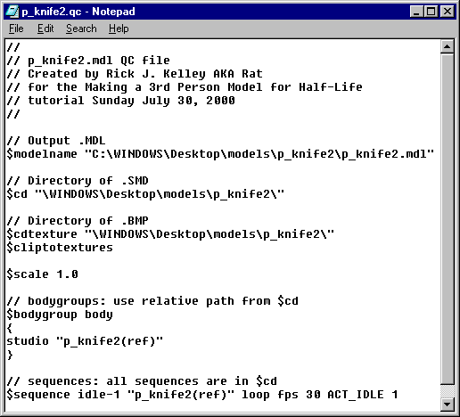

|
|
You will now need to create a "QC" file for this new model. Select "Tools->Half-Life->Generate QC file..." and type in the "File name:" text box: "p_knife2" then click the "Save" button. You will need to alter this "QC" file like we did in the creation of the world model. So we will edit it by selecting "Tools->Half-Life->Edit QC file..." then click the "p_knife2" and the click on the "Open" button. You will need to change it like Figure 1.16 depicts.

Figure 1.16 Correction of the QC file
The final part of the model creation is to compile the file to make your model. First dont forget to save the corrected "QC" file! Next select "Tools->Half-Life->Compile QC file..." and select "p_knife2.qc" and the click on the "Open" button.
After a bit of scrolling in the "Message Window of Milkshape, the compiling will be done and your now ready to see your newly created model in "HLMViewer" or..., you can view it ingame!
You heard me right! After a bit of discussion, you should be able to see your new knife ingame, using tricks that HL modelers use without having to know a bit of coding a new dll to see it ingame.
If you had to recode a new dll just to see what your new weapon will look like ingame, you probably would get discouraged, really fast. Plus the fact is that you may not at this point in time, or ever even want to spend the time to learn how to code. You are probably also tired of looking at the model in HLMViewr. Now you want the thrill of seeing the model and its animations of the model that is using it with your brand new model. It has been know for quite some time, that you can view the player model in what is called 3rd Person View.
The steps necessary to do this is:
See how easy it is to see your weapon or other models ingame without the use of code?
Note: You may choose to view the model a bit closer or further than I prefer to, you can change this by changing the command line where it says: "+cam_idealdist 90" to a greater or lesser number. If you wish to view the player model at a different angle than I do, then you can do this by changing the command line where it says "+cam_idealyaw 220" to to a greater or lesser number.
Next tutorial we will move on to making a working view model or "v_knife2.mdl" for your viewing pleasure.
All material in this tutorial is copyrighted © 2000 by Rick J. Kelley and is not to be copied without the express permission of Rick J. Kelley. Half-Life® is Registered Trademark by Valve. Opposing Force® is a Registered Trademark of GearBox Software. Use of the pseudo name Rat is a referral to the author Rick J. Kelley.
|
|